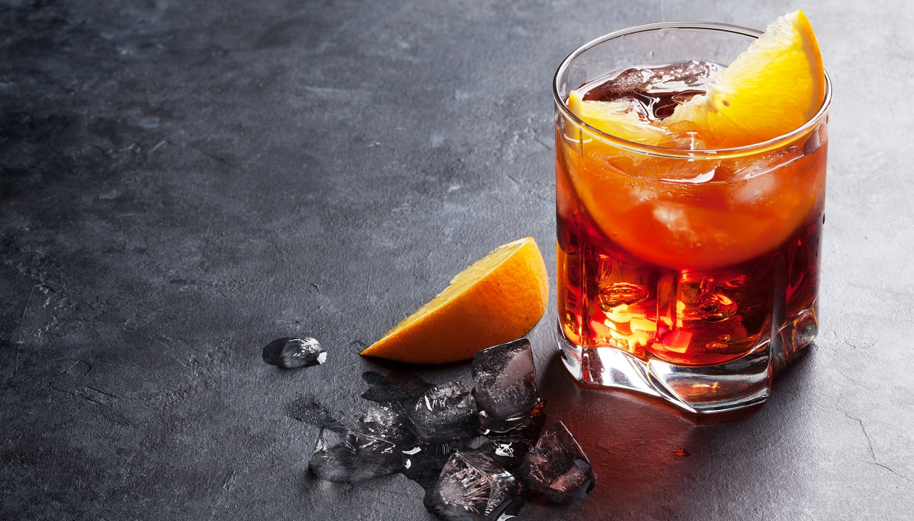

Negroni Sbagliato

Description
For a vibrant take on the negroni cocktail use prosecco instead of gin,
with Campari and vermouth. Serve in a highball glass with an orange slice
Ingredients
- 25ml gin
- 25ml sweet vermouth
- prosecco to top up
- ice
Steps
- In a highball glass pour the Campari and sweet vermouth, add cubed ice and gently add in the prosecco
pouring it down a bar or long spoon that's been placed in the glass will stop the bubbles roaming over the edge of the glass.
Stir contents of the glass together, top up further and garnish with the orange slice.